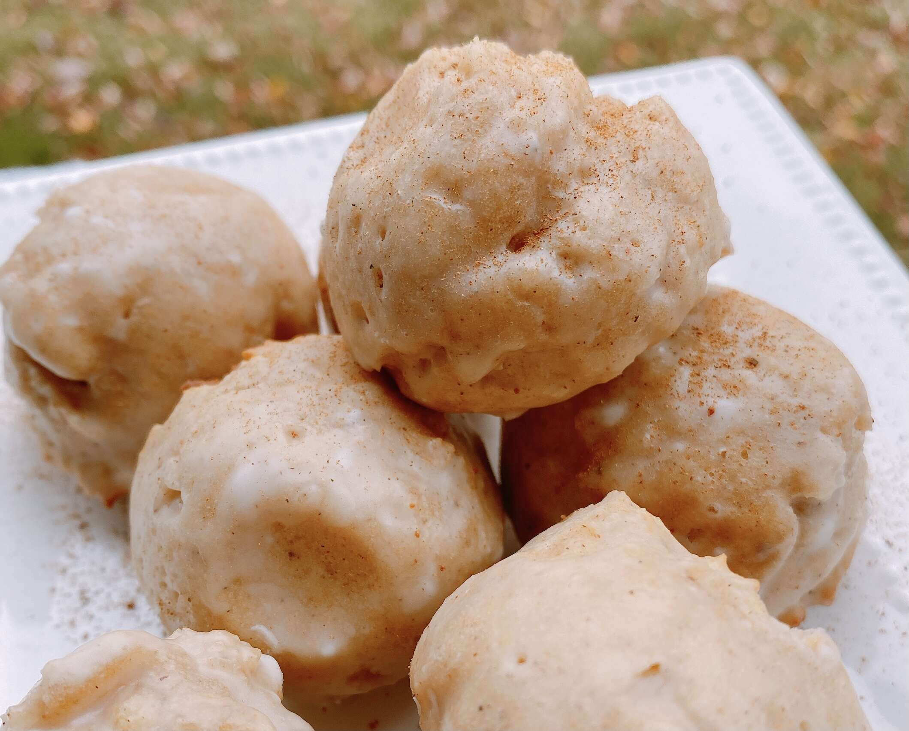

Donuts

dough covered in Glaze
Ingredients
- 2 ¼ cups all-purpose flour
- 3 tablespoons white sugar
- 4 teaspoons baking powder
- 1 ½ teaspoons apple pie spice
- ½ teaspoon salt
- 1 (4 ounce) container unsweetened applesauce
- ½ cup sparkling apple cider
- ¼ cup unsalted butter, melted and cooled
- 1 large egg
- 1 teaspoon apple cider vinegar
Glaze
- 2 cups powdered sugar
- ½ teaspoon apple pie spice
- ¼ cup sparkling apple cider
- 1 teaspoon caramel extract (optional)
Steps
- Preheat the air fryer to 400 degrees F (200 degrees C)
for 5 minutes.
- Combine flour, sugar, baking powder, apple pie spice,
and salt in a large bowl. Whisk together.
- Combine applesauce, sparkling apple cider,
melted butter, egg, and vinegar in a small bowl;
whisk until well combined. Add wet ingredients
to the dry ingredients using a spatula and blend
until just combined. Using a spring-hinged ice cream
scoop, fill each individual cavity of the silicone
donut mold with 2 tablespoons batter. Place mold
into the air fryer basket.
- Decrease temperature to 350 degrees F (175 degrees C)
and cook for 8 minutes. Carefully turn out the donut
bites and cook for an additional 2 minutes.
- Remove donut bites from the basket when done and let
cool completely on a wire rack before glazing, about
30 minutes.
- Combine powdered sugar and apple pie spice in a small
bowl and whisk together. Add sparkling apple cider and
caramel extract; whisk together until the glaze is
smooth.
- Dip each donut bite into the glaze, rolling it so that
all sides are covered with the glaze. Set on a wire rack
to allow the glaze to dry and harden before eating.